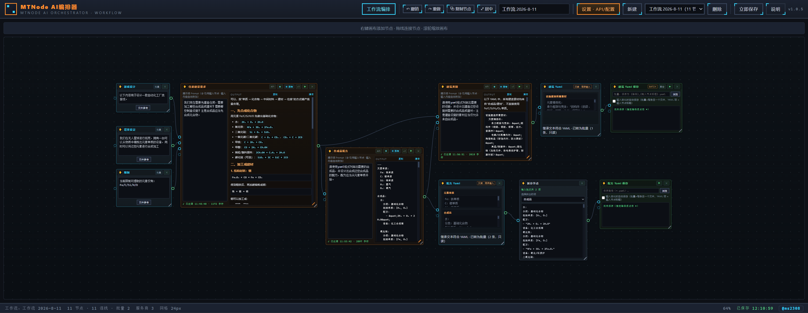

从「调用 API 生成文字 / 图像」进化为完整的 Agent 编排器：画布节点照旧好用，同时自带智能引擎——可读文件、联网搜索、执行命令、调用子代理；支持全屏智能会话、视觉模型、插件 / 技能 / MCP，以及让 AI 直接在画布上搭建工作流。
Windows 10 / 11 x64 · NSIS 一键安装 · MIT License · 离线可用。安装包内置 Node 运行时与 dsh 引擎，无需另行安装。文件由阿里云 OSS 分发。
安装后首次使用：打开「设置 · API/配置」，填写文本 / 图像服务商 API Key（可从服务商目录选择 → 填 Key → 自动载入模型）。智能能力永久启用，任意带 Key 的 OpenAI 兼容文本服务商即可。

工作流画布：节点编排 · @ 引用 · 批量 / 聚合 · 自动递归执行。v1.1 另有全屏「智能会话」与右侧全局助手。
v1.0.25 是可视化画布工具。v1.1 植入 DeepSeek Harness（dsh）后，模型能在你指定的工作目录里真正执行任务，过程可追溯、权限可审批、扩展可安装。
喂给模型提示词与输入，它还你一段文字或一张图。链路停在 API 调用。
提示词变成任务：读文件、写文件、联网、跑命令、提问确认、调用子代理，做完再交结果。节点与会话双向同步。
随应用启动的 Agent 网关。Node 运行时随包装入（Electron 39 / Node 22），零配置。可读文件 / 联网 / 执行命令 / 子代理与后台任务。
顶栏「编排 / 会话」双视图。多会话（按工作目录分组、分支、归档、删除），斜杠命令，流式思考与工具轨迹，运行中可终止。
右侧助手能看全局状态、切换画布、居中节点；也可创建 / 连线 / 排版节点。改图与删除工作流会弹窗确认。智能任务同样可直接搭管道。
智能任务接上图像节点后出现「图」徽标，用 @标题 引用。当前模型不支持识图时列出视觉模型候选，确认后记住选择。
插件 / 技能 / MCP 三个线上目录，卡片搜索、已安装标记、一键安装卸载。支持自定义源。权限预设：无人值守 / 逐项审批 / 只读 / 完全放行。
DeepSeek 官方 · MTNode 自配服务商 · pi-ai 目录统一选择。添加服务商可从目录选 → 填 Key → 自动载入模型与接口。Key 隐藏显示，仅存本机。
整张画布导出为 .mtnodes 包（含节点、连线、提示词与图像资产），或复制 Base64。跨机器无损迁移，模板可开源分享。
思考块、工具 chip（参数 / 结果可展开）、轮数与 token / 缓存命中 / tok/s。提问卡片与权限审批实时弹出。10 款主题色，中英界面。
MTNode 永久免费，无订阅、无账号墙。源码以 MIT License 发布，随版本提供源码包。可自由使用、修改、分发。工作流可导出为 .mtnodes 整体开源，社区可发布「剧本人设框架」一类模板，由大家填充创意角色。
Copyright (c) 2026 M.S · MIT License
不需要。智能引擎使用应用自带的 Node（与主程序同版本），开箱即用，引擎随应用启动。
v1.1.1 起，任意带 API Key 的 OpenAI 兼容文本服务商都可以启用智能能力。DeepSeek 官方仍是默认选项之一；识图需选择支持视觉的模型。
不会。工作流只保存在本机。仅在你主动运行节点时，把提示词与输入发给你配置的服务商 API。API Key 以密文框保存，不出本机。
会，这正是智能模式的能力。请指定正确的工作目录。默认「无人值守」允许工作区内读写；可改为逐项审批或只读。运行过程全程可见，可随时终止。
不会。旧工作流会自动补齐新字段（智能开关、工作目录、预设、思考强度、会话关联等），原节点行为保持兼容。
所有工作流数据保存在本机（%APPDATA%\pipeline-console\pipeline-console\save\），不上传任何服务器；仅在你主动运行节点时，将提示词与输入内容发送至你配置的服务商 API。